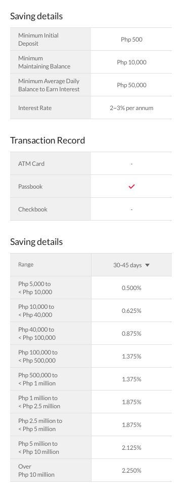
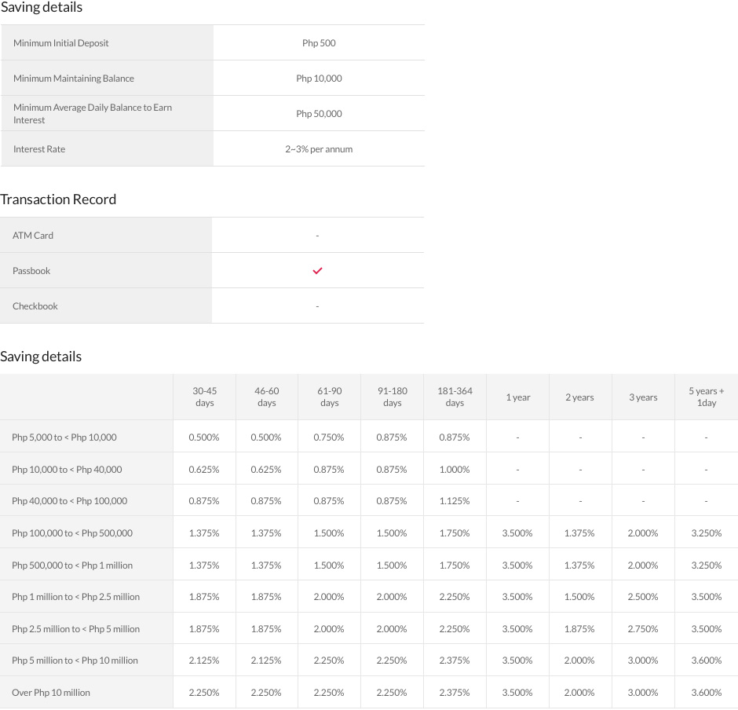

<?php include 'inc/header.php';?><!-- 공통 header include -->

<!-- wrap -->
<div id="wrap" class="gb-fff">
	<!-- 공통 : skipCt -->
	<div id="skipCt">
		<!-- top-info -->
		<div class="top-info">
			
			<div style="background:url('common/images/@/@none_4.jpg') no-repeat center 0;height:440px;" class="hide-on-pc"></div>
		</div>
		<!-- //top-info -->
		<!-- 디자인 최종 나오면 다시 만들기 / 현재 임시.. -->
		<div class="hide-on-mobile">
			<!-- top-fixed-btn -->
			<div data-btn="top-fixed-btn">
				<a href="#none" class="common-btnType-2 waves-effect waves-light type-2">APPLY NOW</a>
			</div>
			<div class="box-tab-fixedGap" style="display:none;"></div>
			<!-- //top-fixed-btn -->
		</div>
		<!-- //디자인 최종 나오면 다시 만들기 / 현재 임시.. -->
		<!-- pc-common-wd940 -->
		<div class="pc-common-wd940 gap-type-1">
			<div class="top-gapType-1">
				
				
			</div>
			<!-- common-btnGap-1 -->
			<div class="common-btnGap-1 hide-on-pc">
				<a href="#none" class="common-btnType-2 waves-effect waves-light type-2">APPLY NOW</a>
			</div>
			<!-- //common-btnGap-1 -->
		</div>
		<!-- //pc-common-wd940 -->
	</div>
	<!-- //공통 : skipCt -->
</div>
<!-- //wrap -->

<?php include 'inc/footer.php';?><!-- 공통 footer include -->

<script type="text/javascript">
	scrollTopBtnFixed.initialize(); // data-btn="top-fixed-btn" script

	$(function(){
		/*
			* mobile header script common
			* new HeaderSplit('버튼 기능', 'home 버튼'));
		*/
		var mobileSns = new HeaderSplit(null, null);

		/*
			* pc sub location menu
			* var subLocation = new SubLocation('1뎁스', '2뎁스 활성화', '2뎁스 선택');
		*/
		var subLocation = new SubLocation('1', '1', '1');

		$('body').attr('data-page', 'h1-logo'); // logo type
	});
</script>